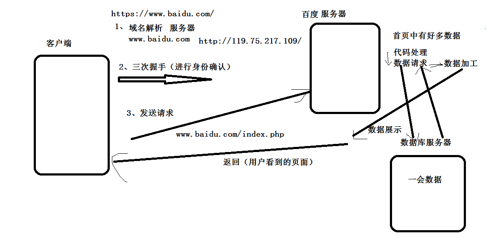

js-PHP
作者： 千锋李文浩
时间： 17/02/17
phpStudy安装
自己安装
静态网页和动态网页（扩展）
1、静态网页
数据不会自动更新的网页。比如你自己现在写的任意一个html文件。
2、动态网页
数据能够自动更新，依赖于后端语言。比如百度首页，不同时间看的网页内容是不一样的。
前端、后端、后台（扩展）
1、前端
负责用户能够看到的内容（浏览的网站、手机app等），比如网站布局、色调、排版等，和用户体验打交道。
html、css、js
2、后端
负责逻辑处理、数据处理，和数据库打交道。比如怎么把用户注册的信息写到数据库里面啊，怎么把所有的新闻从数据库中读出来给前端啊。
php、java、jsp、asp等
有时候前端后端 也有人说成前台后台，根据语义自己分析。
3、后台（后台管理系统）
后台真正指的是网站的管理系统，称为后台管理系统。
比如：今天你从公司辞职了，你的信息要从数据库中删除，这是人力需要做的事情，可是人力不懂数据库，于是开发出一个网站，负责管理公司数据的，人力只需要在网页中找到你，点击删除就ok了，那么这个网站就称为后台管理系统。
数据库（提前了解）
以组和列的规则存放数据的仓库，并支持后端语言对其进行操作（增删改查）。
phpAdmin
网站的数据是怎么更新的？（扩展）


后端语言有哪些？（扩展）
java、php、.net、jsp、asp 、C#
什么是PHP？
1、超文本预处理语言（PHP:Hypertext Preprocessor）的缩写。
2、在服务器端执行的嵌入HTML文档的脚本语言。
3、混合了 C、Java、Perl 以及 PHP 自创新的语法。
4、一种快速执行动态网页的后端语言。
为什么要学习PHP？
1、PHP是最容易上手的后端语言。
2、PHP和网站开发是绝配。
3、简单学习一门后端语言，对学习前端及以后工作有很大的帮助。
比如后面要学习的ajax、跨域等，有点后端语言的基础，能够很轻松的学习。
PHP的运行环境
1、php没有html那么好说话，不可以直接用浏览器打开，需要php运行环境支持。
2、phpStudy 集成环境
2、需要在Apache服务器中解析运行。
什么是 IDE（重）（扩展）
1、集成开发环境。
2、集成了代码编写功能、分析功能、编译功能、调试功能等一体化的开发软件。
3、比如常见的代码编写软件：HBuilder、WebStorm、Eclipse等
分界符（重）
1、php常用的分界符为：
<?php
//这里是php代码
?>
由于php代码需要由服务器解析，必须声明php代码从什么地方开始，到什么地方结束。
<?php 表示php代码开始
?> 表示php代码结束
2、其他三种不常用：
<? ?>(需要设置参数)
<script language="php"></script>
<% %>(需要设置参数)
打开服务器
1、在地址栏中输入 localhost
2、在地址栏中输入 127.0.0.1(本机环回地址)
php存在的两种形式（重）
1、和网页嵌套在一起
此种方式主要用于将数据插入到html中
2、纯php代码
此种方式负责逻辑处理和数据库操作。
.php 后缀
js数据类型（回顾）
Number String Boolean Null Undefined Array Object
typeof
instanceof {} instanceof Object
function Dog(){}；
var dog = new Dog();
typeof dog ; object
dog instanceof Dog //true
数据类型（重）
布尔值 true false
整型 12 -12
浮点型 12.3 15.6
字符串 'love you' "hate you"
NULL
数组 [] array()
对象 class
定义变量（重）
1、定义变量必须使用 $ 开头 $变量名
demo:
定义字符串： $name = "张三";
定义数字： $num = 10;
定义布尔值： $flag = false;
2、不能使用关键字（系统使用的名字）

强调（重）
由于php属于后端语言，对语法要求特别严格。每句代码结束必须加分号 ;
页面输出（重）
1、echo 用于简单输出，比如输出数字、字符串、布尔值等
demo：
$name = '张三';
echo $name;
2、print 用于输出复杂数据，如：数组和对象，也可以输出简单数据类型
字符串拼接（重）
1、php中字符串拼接使用 点 .
demo:
$name = "张三";
echo "他的名字是" . $name;
2、php支持直接在字符串中写变量，如果要输出$符，需要对$进行转义
demo:
$age = 18;
echo "我今年$age岁了";
判断（重）
判断和javascript中的一致，格式为：
if(判断条件){
}else{
}
demo:
$num = 10;
if($num > 5){
//条件为真做的事情
}
三元表达式
表达式 ? 表达式1 : 表达式2;
demo:
$num = 5;
$result = $num > 3 ? 5 : 20;
循环（重）
1、for循环，规则和js一致
demo:
for($i=0; $i<5; $i++){
}
2、while(){} do{}while();
2、foreach 用于遍历数组
demo1:
foreach ($array as $value)
{
echo $value;
}
demo2:
foreach ($array as $key => $value)
{
echo $key . '===' . $value
}
count(重)
count方法用于返回数组长度
$arr = [1,2,3,4];
echo count($arr);//4
$school = array('xx小学','xx初中','xx高中','xx大学','xx公司');
for($i=0; $i<count($school); $i++){
echo $school[$i].'<br>';
}
函数（重）
1、简单的函数的声明和js很像（函数名不加$）
demo:
function show($num){
echo $num;
}
showInfo(10);
2、有访问权限的函数声明（了解）
//私有方法
private function showMoney(){
}
数组（重）
1、[] (php高版本)
$family = ["奶奶",'dad','mom','me','brother','sister'];
2、array()
demo:
$arr = array(10,20,30);
$school = array('xx小学','xx初中','xx高中','xx大学','xx公司');
3、用数组定义类似json的格式
变量名 = array(
属性名1 => 属性值1,
属性名2 => 属性值2
);
$person = array(
"name" => "张三",
"age" => 18
);
4、数组遍历：
demo1：
for($i=0; $i<count($school); $i++){
echo $school[$i].'<br>';
}
demo2：
/*
foreach(数组 as $value){
$value //遍历时数组的元素
}
*/
$family = ["奶奶",'dad','mom','me','brother','sister'];
foreach($family as $v){
echo '<br>'.$v;
}
demo3：
/*
foreach(数组 as $key => $value){
$key //键名（属性名）
$value //键值 （属性值）
}
*/
foreach($person as $k => $v){
echo '<br>'.$k . ' => ' . $v;
}
对象
定义对象（class）
class person {
function show(){
echo "我的名字是张三";
}
}
$zs = new person();
$zs->show();
$_GET / $POST（重）
接收提交的数据
实战
1、登录验证
2、显示用户列表
数据返回（重）
返回数据使用echo
1、返回普通数据
2、返回json字符串
json_encode() 方法用于将数组转化为json字符串
demo:
$data = array(
'status' => 1,
'login_time' => 20170220
);
json_encode($data); // {"status":1,"login_time":201702020}
预习
1、什么是ajax？
2、ajax有什么优点？
3、ajax怎么写？
4、使用ajax完成武汉天气查询